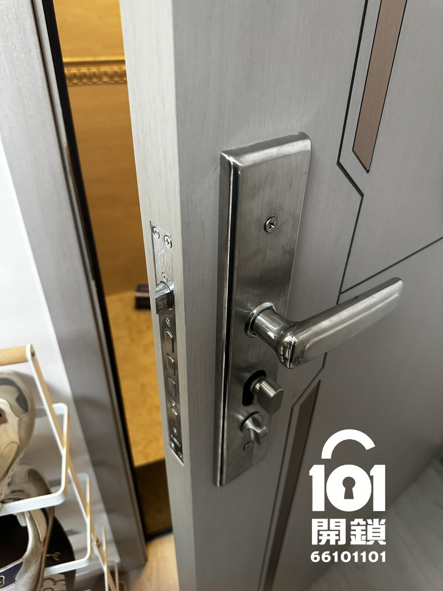

中西區・西營盤・歐式鎖鎖膽
西營盤換鎖服務案例｜更換歐式鎖鎖膽
工人姐姐離職後，客人希望更換住宅歐式鎖鎖膽，目的是廢除舊匙，之後只能用新匙開關大門。客人透過WhatsApp提供門鎖相片和所在地區後，101開鎖先按鎖膽款式、門厚及現場情況初步報價，再安排師傅上門更換。
即撥 66 101 101WhatsApp 查詢
客人搵換鎖原因
客人表示工人姐姐離職後，希望盡快更換住宅大門鎖膽，避免舊匙仍然可以開門。今次處理重點不是單純維修，而是更換歐式鎖鎖膽，令舊匙失效，日後只能使用新匙開關。
客人主要顧慮
客人最關心舊匙是否可以完全廢除、新鎖膽是否合適原有門鎖、安裝後門身會否受損，以及新匙操作是否順暢。101開鎖會先確認歐式鎖鎖膽長度、門厚、鎖體狀態和鎖舌咬合，再向客人講清楚收費及更換方式。
到場檢查與處理方法
師傅到場後先檢查原有歐式鎖鎖膽、螺絲位置、門厚和鎖舌運作，確認可以更換後才施工。更換過程會盡量保留原有鎖體及門身，只替換合適尺寸的鎖膽，完成後再調整及測試，確保門鎖開關順暢。
完成後測試
更換鎖膽後，師傅會用新鎖匙反覆測試開門、關門、上鎖、反鎖及鎖舌回彈，並確認室內外兩邊操作正常。完成後舊匙不能再開啟新鎖膽，客人只需保管新匙及後備匙。
完成後室內及室外照片
以下為更換歐式鎖鎖膽完成後記錄，展示室內及室外門鎖狀態。新鎖膽已完成測試，舊匙不能再開啟，只可用新匙開關。

完成後室內照片

完成後室外照片
101開鎖保養建議
工人姐姐離職、租客退租、搬屋或懷疑舊匙外流時，建議盡快更換鎖膽，而不是只複製新匙。更換鎖膽後舊匙即時失效，可以減低未授權開門風險。
西營盤需要更換歐式鎖鎖膽？
可致電 +852 6610 1101，或WhatsApp發送門鎖相片、地區和情況。師傅會先評估鎖膽款式、尺寸、處理方式和收費，再安排上門。
24小時電話WhatsApp 發相報價